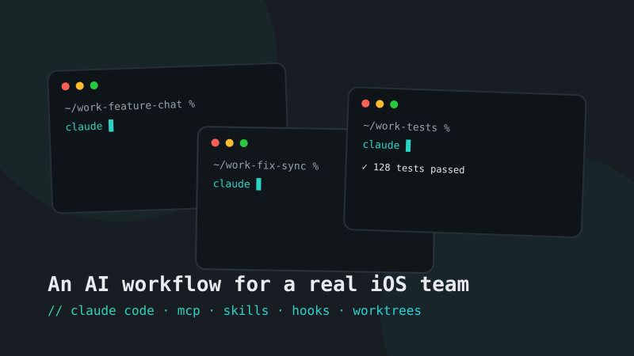

// ai-assisted development
Making Claude Code native to an iOS team

Everyone on my team had tried AI coding tools. A chat window here, an autocomplete there — useful, but individual. What we didn't have was a team workflow: something that makes the agent behave like an engineer who knows our codebase, respects our conventions, and proves its work the same way we have to.
This is the setup we converged on for Work, Oodrive's secure document management app — an enterprise iOS codebase with 6 SPM modules and 5 internal libraries, shipped to clients like LVMH, Crédit Agricole, BNP and the Paris Bar Association. Nothing here is theoretical: it's what runs on our machines every day.
It's not an experiment on the side anymore — it's simply how the team works, every day, on every branch.
1. The foundation: a project CLAUDE.md
The single highest-leverage file in the repo. Claude Code reads it at the start of every session, so it's where the codebase explains itself: module map, architecture rules, build commands, and the non-negotiables.
# CLAUDE.md (excerpt)
## Architecture
- MVVM + Clean Architecture. Presentation → Domain → Data. Never skip a layer.
- 6 SPM modules: Presentation, OInject, MediaViewer, OBiometrics, OOrientation, DeveloperMode.
- DI via Swinject through the OoAssembly protocol — never instantiate services directly.
## Conventions
- Swift 6 strict concurrency. New screens are SwiftUI.
- Tests use Swift Testing (@Test), not XCTest, for new code.
- Strings go through the i18n wrapper — no hardcoded user-facing text.
## Definition of done
- swiftlint --strict passes, tests pass, coverage reported.Before CLAUDE.md, every session started with the agent rediscovering the project — and occasionally "improving" things it shouldn't touch. After it, output started looking like it came from someone who'd read our onboarding doc.
2. MCP servers: giving the agent hands
Out of the box, an agent can edit files. To be useful on iOS it must also build, test and read documentation. That's what MCP servers are for — we run three:
- XcodeBuildMCP — the agent builds the workspace and runs the test suite itself, then reads the failures. This closes the loop: it doesn't claim something works, it demonstrates it.
- apple-docs — direct access to Apple documentation, so API usage is grounded in the current SDK instead of the model's memory.
- mobile-mcp — drives the simulator for UI-level checks.
// .mcp.json
{
"mcpServers": {
"XcodeBuildMCP": { "command": "npx", "args": ["-y", "xcodebuildmcp@latest"] },
"apple-docs": { "command": "npx", "args": ["-y", "apple-docs-mcp"] },
"mobile-mcp": { "command": "npx", "args": ["-y", "@mobilenext/mobile-mcp@latest"] }
}
}The day the agent could build, run the failing test, read the error and push a fix on its own, something clicked for the team: we stopped thinking of it as autocomplete and started treating it as a teammate whose work you review.
3. Custom Skills: encoding the team's expertise
Generic model knowledge is wide but shallow on the things that matter to us. Skills fix that: each one is a markdown playbook the agent loads when the task matches. I wrote four for the team:
- SwiftUI Expert — our component patterns, Design System tokens usage, what "good" looks like in our Presentation module.
- Swift Concurrency — Swift 6 strict-concurrency rules, actor isolation decisions, the migration patterns we standardized.
- Swift Testing — how we structure @Test suites, our mocking approach (SwiftMocks), what must be covered before a PR.
- iOS 26+ Liquid Glass — the new design language, so UI proposals target what Apple ships now, not 2023 blog posts.
---
name: swift-testing
description: Writing tests the Work way — Swift Testing, SwiftMocks, coverage rules
---
When writing tests for this codebase:
- Use Swift Testing (@Test, #expect) — XCTest only for legacy suites.
- One behavior per test; name tests after the behavior, not the method.
- Mock through SwiftMocks protocols from OoInject — never hit network or disk.
…4. Hooks: quality that doesn't rely on memory
Here's the thing about agents: they edit a lot of files, fast. Asking a human to check style on every edit doesn't scale. So the check runs itself — a PostToolUse hook fires SwiftLint after every file the agent touches, and feeds violations straight back into the session:
// .claude/settings.json (excerpt)
{
"hooks": {
"PostToolUse": [{
"matcher": "Write|Edit",
"hooks": [{ "type": "command",
"command": "jq -r '.tool_input.file_path' | { read -r f; swiftlint lint --strict \"$f\"; }" }]
}]
}
}The agent fixes its own lint violations before I ever see the diff. The rule is enforced by the system, not by discipline.
5. Scaling up: one session per git worktree
Nothing futuristic to look at — just a terminal, tmux and a few git worktrees. I typically keep five to ten Claude sessions open, one per worktree, each on its own branch: a feature here, a flaky test hunt there, a refactor in the background.
git worktree add ../work-feature-chat feature/chat-attachments
git worktree add ../work-fix-sync fix/offline-sync
# one terminal tab + one claude session per worktreeWorktrees keep the agents from stepping on each other; the branch model keeps every change reviewable. My job shifts from typing code to routing work and reviewing results — much closer to what a tech lead does anyway.
6. Verification is the system
When agents are doing real work without a human manually executing every step, verification becomes the most important part of the system. Ours is layered:
- the lint hook catches style on every edit;
- XcodeBuildMCP lets the agent prove its change compiles and passes tests before it reports done;
- the GitLab pipeline replays everything — lint → tests + coverage → SonarQube → Firebase;
- and a human reviews every merge request. The agent writes code; it doesn't get merge rights.
What actually changed
I won't give you vanity metrics — we don't measure this workflow in lines per hour. What we see is simpler and more meaningful: our velocity has gone up, sprint after sprint, and the team just moves better.
The real lesson is a mindset shift. Claude Code is not a tool to accelerate typing. Set up properly, it's closer to a new colleague: it does good work with us because we gave it the right context to read and the same tools we use every day — exactly like onboarding a real developer into the team. Skip that onboarding and you get a fast intern guessing; do it and you get a teammate.
Takeaways
- Treat the agent like a new teammate, not a faster keyboard. Onboard it: context, tools, standards.
- Invest in context, not prompts. One good CLAUDE.md beats a hundred clever prompts.
- Give the agent the same tools you use. If it can't build and test, it can only guess.
- Encode your standards as Skills and hooks — systems scale, discipline doesn't.
- Parallelize with worktrees, review like a lead.
- Trust nothing without verification. That's not distrust of AI — it's how good engineering already worked.
Questions, war stories, or a setup of your own to compare? I'm happy to chat — email or LinkedIn.